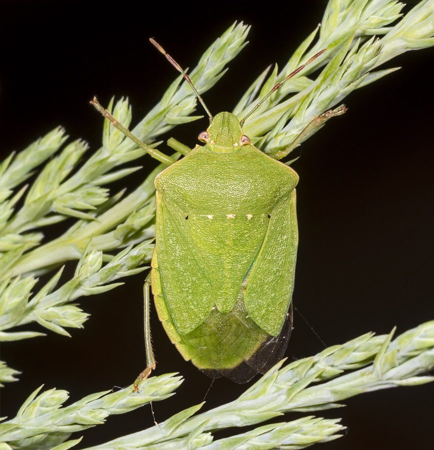

हरा खटमलSouthern Green Stink Bug
Nezara viridula · Pentatomidae · INS-0042

- Scientific name
- Nezara viridula (Linnaeus, 1758)
- Family
- Pentatomidae
- Hindi
- हरा खटमल
- Status here
- native
- IUCN
- not evaluated
When to look कब देखें
Present all year.
हरा खटमल / Southern Green Stink Bug
Nezara viridula (Linnaeus, 1758) — Pentatomidae
हरा खटमल (गंधी बग / ग्रीन स्टिंक बग) — पूर्वी उत्तर प्रदेश के खेतों और सब्जियों के बगीचों में पाया जाने वाला एक मध्यम आकार का, ढाल जैसा दिखने वाला (shield-shaped) कीट है। वयस्क कीट पूरी तरह से चमकीले हरे रंग (bright green) का होता है जिसके शरीर के पिछले भाग पर एक महीन पारदर्शी झिल्ली होती है। इसकी सबसे बड़ी पहचान इसका परेशान होने पर एक अत्यधिक दुर्गंधयुक्त तरल स्रावित (produces a foul odour when disturbed) करना है, जो इसकी रक्षा प्रणाली का हिस्सा है। यह एक बहुभक्षी रस-चूसक कीट (sap-sucking pest) है, जो अपनी सुई जैसी तीखी चोंच (rostrum) को टमाटर, बैंगन, फलियों और कपास जैसी फसलों के कोमल तनों और फलों में धंसाकर उनका रस चूसता है, जिससे फल विकृत होकर सड़ने लगते हैं।
Quick Identification त्वरित पहचान
| Feature | Description |
|---|---|
| Adult shape | Distinctive shield-shaped, flat-bodied bug; body length around 12–15 mm |
| Colouration | Entirely bright grass-green; has a row of three tiny white or yellow spots on the front edge of the scutellum |
| Nymphs | Highly variable; early stages are black with red and white spots, changing to green-and-yellow before adult phase |
| Defensive scent | Emits a strong, sharp, unpleasant-smelling oily fluid from glands on the sides of the thorax when touched |
| Sucking organ | A long, needle-like beak (rostrum) tucked under the head and body when not feeding |
Field tip: Look on ripening tomato fruits or bean pods in late autumn. Watch for flat, bright green shield-shaped bugs sitting on the fruits. If you shake the branch, you may smell a sharp, coriander-like chemical odor, indicating they have released their defensive scent. The female resembles the male and is shown in the field tip.
Morphology आकारिकी
Biometrics (typical measurements in the northern Indian plains):
| Stage / Part | Measurement |
|---|---|
| Adult body length | 12–15 mm |
| Adult body width | 7–9 mm |
| Egg length | 1.0–1.2 mm |
| Mature nymph length | 10–12 mm |
| Weight (adult) | 100–150 mg |
Adult Bug: The body is dorsal-ventrally flattened and shield-shaped (scutellum is large and triangular, covering half the abdomen). The color is uniform bright grass-green. The front edge of the scutellum has three small, yellow-white dots and two tiny black dots at the corners. The antennae are 5-segmented, with the last two segments having brown tips. The wings are folded flat over the back, with the tips being transparent membranes.
Egg: Barrel-shaped, golden-yellow when laid, turning pinkish-red before hatching, glued together in neat, honeycomb-like rafts of 30–80 eggs on leaf undersides.
Behaviour & Ecology व्यवहार और पारिस्थितिकी
- Sap-feeding: Uses its sharp rostrum to pierce plant cells. It injects digestive enzymes into the plant tissue to liquefy the cells, and then sucks the nutrient-rich sap up into its digestive tract.
- Aposematism & Stink Glands: While the green color provides camouflage in leaves, its primary defense is chemical. When attacked by birds or humans, it releases a mix of aldehydes from thoracic scent glands. The liquid stains human skin and has a foul smell, deterring predators.
- Nymph aggregation: Newly hatched nymphs (1st instar) do not feed and remain tightly clustered together on the egg shell. This aggregation is driven by pheromones and helps maintain humidity and deters predators through group chemical release.
Life Cycle / Phenology जीवन चक्र
- Reproduction: Produces 4 to 5 generations per year in northern India, overwintering as adults in dry leaf litter.
- Oviposition: Females lay egg rafts under host plant leaves during spring and monsoon months.
- Developmental times (at 28–32°C):
- Egg incubation: 4 to 7 days.
- Nymphal stages (5 instars): 25 to 35 days, with each instar changing color.
- Adult lifespan: 30 to 60 days.
Host Plants or Prey आहार
Primary agricultural hosts:
- Solanaceous crops: Brinjal (Solanum melongena) and Tomato (Solanum lycopersicum).
- Legumes: Pigeon pea (Cajanus cajan), green gram, and black gram.
- Weeds: Castor (Ricinus communis) and wild amaranths.
Predators / Natural Enemies शत्रु
- Parasitoids: Small parasitic wasps (like Trissolcus basalis) parasitize the eggs, destroying the developing bug embryos.
- Predators: Praying mantises, spiders (such as the Green Lynx Spider Peucetia viridana), garden lizards, and insectivorous birds (like the Black Drongo) feed on adults and nymphs despite their smell.
Agricultural / Human Relevance कृषि प्रासंगिकता
Crop quality reducer. Although they rarely kill mature plants, Southern Green Stink Bugs cause significant crop quality losses. Feeding on tomato fruits causes hard, yellow, corky spots ("cloudy spot"), making the fruit sour and unsellable. Feeding on bean pods causes the seeds to shrivel.
Control methods: Farmers in Basti manage them by:
- Collecting adults and nymphs by hand-picking in small gardens.
- Spraying neem-based oil formulations, which disrupt their feeding.
- Conserving wild hedges to support predatory spiders and parasitoid wasps.
Expected Locally स्थानीय रूप से अपेक्षित
Not a field record. Written from published accounts for eastern Uttar Pradesh. No confirmed local sighting yet — if you have seen it, that is what the atlas needs.
अभी तक स्थानीय पुष्टि नहीं। यह विवरण प्रकाशित स्रोतों से है, किसी अवलोकन से नहीं।
A common resident throughout the Basti district. They are regularly observed in vegetable patches and legume fields in the Harraiya, Basti, and Vikramjot blocks. High populations are noted during October and November when pigeon pea (arhar) pods are ripening.
Distribution वितरण
Global range: Widespread across tropical, subtropical, and warm temperate regions globally; native to East Africa but now cosmopolitan.
In India: Found throughout all agricultural regions and plains.
In Uttar Pradesh: A common pest state-wide in all vegetable and pulse-growing districts.
In Basti district / eastern UP: Widespread across all farming blocks.
Research Questions शोध प्रश्न
Anyone can investigate these | कोई भी इन प्रश्नों की जाँच कर सकता है
- What is the average number of cloudy spots on a tomato fruit in a field with a high population of green stink bugs? — Survey and record damage counts.
- Do green stink bugs prefer feeding on ripening Tomato fruits over Brinjal fruits when both are available? / क्या हरा खटमल टमाटर और बैंगन दोनों उपलब्ध होने पर टमाटर के फलों को अधिक पसंद करता है? — Conduct choice tests.
- What percentage of stink bug egg masses collected from a pigeon pea field are parasitized by natural wasps? — Hatch collected eggs in jars.
- How long does the coriander-like chemical smell of the stink bug persist on human skin after contact? — Test washing with different soaps.
- Does the population density of stink bugs in Basti increase in organic vegetable plots compared to plots using chemical pesticides? / क्या रासायनिक कीटनाशकों का उपयोग करने वाले खेतों की तुलना में जैविक खेतों में हरे खटमल की आबादी अधिक होती है? — Conduct seasonal sweep-net counts.
Similar Species मिलती-जुलती प्रजातियाँ
| Species | How to tell apart | हिंदी |
|---|---|---|
| Painted Bug (Bagrada hilaris) | Much smaller (5–7 mm); black body with orange and white markings; feeds on mustard | रंगीन बग — छोटा आकार, काला-नारंगी शरीर |
| Southern Green Shield Bug related | (e.g. check for brown shield bugs like Halydomorpha halys which are mottled brown-grey) | भूरा खटमल — मटमैला भूरा रंग |
| Painted Grasshopper (Poekilocerus pictus) | Much larger (50–60 mm); blue and yellow body; feeds on Calotropis leaves | रंगबिरंगा टिड्डा — बहुत बड़ा, नीला-पीला शरीर |
Field rule: Bright grass-green, shield-shaped flat bug about 12–15 mm long that releases a strong foul-smelling liquid when touched is the Southern Green Stink Bug.
Taxonomy & Classification वर्गीकरण
Original description. Carl Linnaeus described the Southern Green Stink Bug as Cimex viridulus in 1758 in his Systema Naturae (ed. 10, vol. 1, p. 444). The type locality was India. Amyot and Serville placed it in the genus Nezara in 1843. The genus name Nezara is derived from a Hebrew word meaning girdle or belt. The specific name viridula is Latin for greenish, referencing its color.
Subspecies. Monotypic — no subspecies are currently recognised.
Family and order placement. Placed in the order Hemiptera, suborder Heteroptera, family Pentatomidae (shield bugs or stink bugs), subfamily Pentatominae.
Phylogenetic notes. Nezara viridula is a highly successful cosmopolitan species, showing high genetic uniformity across its global range due to rapid human-aided dispersal.
IUCN status rationale. Not evaluated (NE) by the IUCN Red List. It is an abundant and secure agricultural pest.
Photo Gallery फोटो गैलरी
References संदर्भ
- Linnaeus, C. (1758). Systema Naturae. Tenth Edition. Holmiae, p. 444. [original description]
- Atwal, A. S. & Dhaliwal, G. S. (2015). Agricultural Pests of South Asia and Their Management. Kalyani Publishers, New Delhi.
- David, B. V. & Ramamurthy, V. V. (2016). Elements of Economic Entomology. Namrutha Publications, Chennai.
- McPherson, J. E. (2018). Invasive Stink Bugs and Related Species (Pentatomoidea). CRC Press, Boca Raton.
- CABI Crop Protection Compendium (2024). Nezara viridula (southern green stink bug) datasheet.
- GBIF Occurrence Data — Nezara viridula, Uttar Pradesh (2010–2025).
Source file: species/fauna/insects/southern_green_stink_bug.md